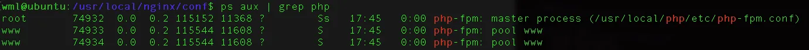
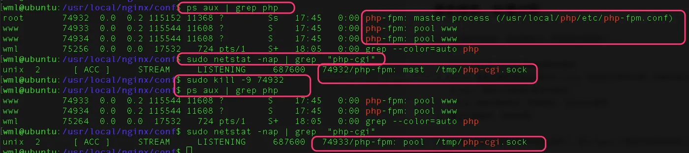
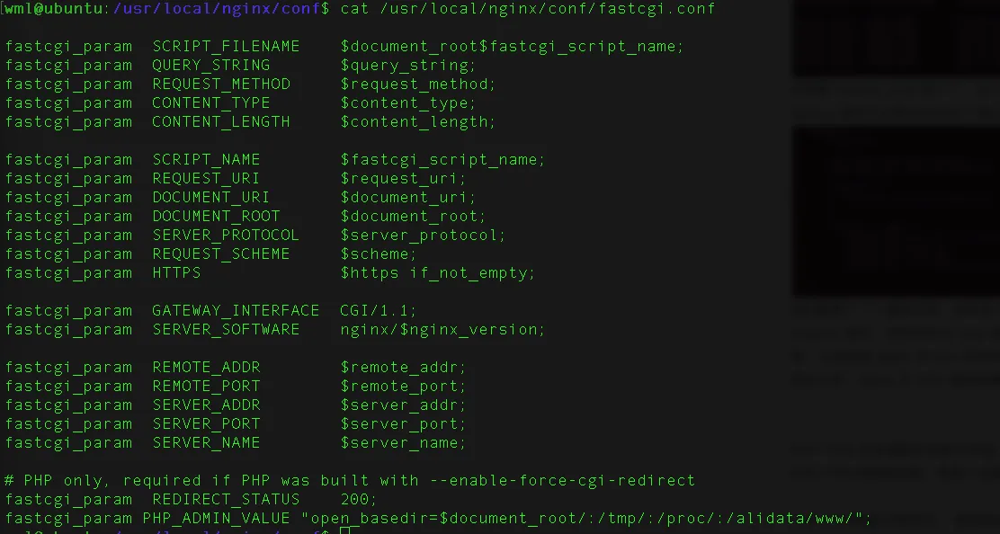

PHP-FPM 是一个 PHP FastCGI进程管理器，包含 master 进程和 worker 进程两种进程：
master 进程只有一个，负责监听端口，接收来自 Web Server 的请求，
worker 进程则一般有多个 (具体数量根据实际需要配置)，每个进程内部都嵌入了一个 PHP 解释器，是 PHP 代码真正执行的地方，
下图是我本机上查看 php-fpm 的进程情况，1一个 master 进程，2个 worker 进程：

虽然master进程负责监听端口，但若只杀死master，php-fpm仍可正常服务；
此时会变为php-fpm的worker进程负责监听端口，仍可正常提供服务，
若再杀死了这个监听端口的worker进程，会切换到另一个worker进程监听，除非杀死所有进程。
至于worker进程监控端口时，是否会将请求分发到其他worker进程，可以在代码中打印进程号看一下。验证过程：

如上图所示，利用
sudo netstat -nap | grep "php-cgi"查看master进程杀死前后监听 /tmp/php-cgi.sock 进程的变化
从 FPM 接收到请求，到处理完毕，其具体的流程如下：
FPM 从接收到处理请求的流程就是这样了，那么 Nginx 又是如何发送请求给 fpm 的呢？这就需要从 Nginx 层面来说明了。
我们知道，Nginx 不仅仅是一个 Web 服务器，也是一个功能强大的 Proxy 服务器，除了进行 http 请求的代理，也可以进行许多其他协议请求的代理，包括本文与 fpm 相关的 fastcgi 协议。为了能够使 Nginx 理解 fastcgi 协议，Nginx 提供了 fastcgi 模块来将 http 请求映射为对应的 fastcgi 请求。
Nginx 的 fastcgi 模块提供了 fastcgi_param 指令来主要处理这些映射关系，下面 Ubuntu 下 Nginx 的一个配置文件，其主要完成的工作是将 Nginx 中的变量翻译成 PHP 中能够理解的变量。

除此之外，非常重要的就是 fastcgi_pass 指令了，这个指令用于指定 fpm 进程监听的地址，Nginx 会把所有的 php 请求翻译成 fastcgi 请求之后再发送到这个地址。下面一个简单的可以工作的 Nginx 配置文件：
server
{
listen 80 default_server reuseport;
#listen [::]:80 default_server ipv6only=on;
server_name _;
index index.html index.htm index.php;
root /home/wwwroot/default;
#error_page 404 /404.html;
# Deny access to PHP files in specific directory
#location ~ /(wp-content|uploads|wp-includes|images)/.*\.php$ { deny all; }
location ~ [^/]\.php(/|$)
{
try_files $uri =404;
fastcgi_pass unix:/tmp/php-cgi.sock;
fastcgi_index index.php;
include fastcgi.conf;
}
location /nginx_status
{
stub_status on;
access_log off;
}
location ~ .*\.(gif|jpg|jpeg|png|bmp|swf)$
{
expires 30d;
}
location ~ .*\.(js|css)?$
{
expires 12h;
}
location ~ /.well-known {
allow all;
}
location ~ /\.
{
deny all;
}
access_log /alidata/log/nginx_access.log;
}在这个配置文件中，我们新建了一个虚拟主机，监听在 80 端口，Web 根目录为 /home/wwwroot/default。然后我们通过 location 指令，将所有的以 .php 结尾的请求都交给 fastcgi 模块处理，从而把所有的 php 请求都交给了 fpm 处理，从而完成 Nginx 到 fpm 的闭环。
PHP-FPM 对处理高并发能力有限，php-fpm 启动时会启动多个php-fpm子进程用来接收请求，因为启动的PHP-FPM进程数有限，而每个进程同时只能处理一个请求（同步阻塞）。请求过来后要排队执行。
PHP-FPM性能大概评估： 假设启动100个php-fpm进程，如果一个请求消耗100ms，100个进程可以提供1000qps，也就是1000qps大概可以支持。但根据二八原则，支持的请求数会大量减少。
内存释放简单，使用多进程模型时进程可以容易通过退出的方式来释放内存， 由于PHP有非常多的扩展，稍有不慎就可能导致内存泄露，fpm通过进程退出方式 简单粗暴的解决了问题。
容灾能力强，同样的问题，扩展或者php可能会出现段错误，如果是单进程多线程模型， 那么整个PHP就挂掉了。这会影响服务，多进程的话，某个进程死掉了也不会影响整体的服务。
多进程有多进程的优势，多线程也有多线程的优势，比如HHVM它选择的是多线程模型。 多线程模型最大的好处是信息共享和通信方便，因为在同一个进程空间内，可以直接使用指针。
在多进程情况下，由于跨进程是不好传递fd连接的。那么多进程通常采用在父进程中listen()， 然后各个子进程accept()的方式来实现负载均衡。这样的模型下可能会有惊群的问题。
而多线程模型下，可以采用一个独立线程接受请求然后派发到各个worker线程的方式。
这种模型严重依赖进程的数量解决并发问题，一个客户端连接就需要占用一个进程，工作进程的数量有多少，并发处理能力就有多少。操作系统可以创建的进程数量是有限的。
启动大量进程会带来额外的进程调度消耗。数百个进程时可能进程上下文切换调度消耗占CPU不到1%可以忽略不接，如果启动数千甚至数万个进程，消耗就会直线上升。调度消耗可能占到CPU的百分之几十甚至100%。